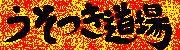
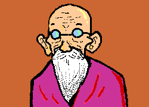

うそつき道場


はいってきたなら、あいさつぐらいせえ！！
これだから、最近のわかいもんは、うそひとつにしても、駄目なんじゃ！まったく、礼儀というものをしらんのう。若い連中は。だいたいすぐに人の真似をしよる。それで人の真似しかせんくせに、「私の個性です」などと、ぬかしよる。なんでもかんでもマスコミにおどらされ、それがかっこいいことだと勘違いしよる。これからの日本はどうなるんじゃ。わしの道場を引き継ぐはずじゃった息子もあの馬鹿嫁の入れ知恵で、レンタルビデオにするじゃと。わしの土地じゃ！この道場は誰にもわたさんぞ！！馬鹿嫁め！わしのことを「おじいちゃん」などと、よびおって！「お養父さん」じゃろが！！だいたい、あの嫁は息子がつれてきたときから、きにくわんかった。あの嫁は、はいってきたなり、「大きな道場ですね。何坪くらいあるんですか？」こうききよる。きさまには、関係ないことじゃろが！そんなことも、みぬけん馬鹿息子に育ててしまったわしにも責任があるのかいのう。悲しいことじゃ。それも、最近はわしを殺そうかとしてるらしく、嫁はわざと塩からい味噌汁を用意しよって。わしが血圧高いのをしっておるじゃろが！それをいったら、次の日からは、何の味もせん味噌汁をだしよって！馬鹿嫁が！！！そんな、くだらんことをしとる暇があるなら、うそのひとつでも磨いてじゃな！.............うう。血圧が............
うそじゃ。
道場に戻る
 目次へ、れっつらごー！
目次へ、れっつらごー！